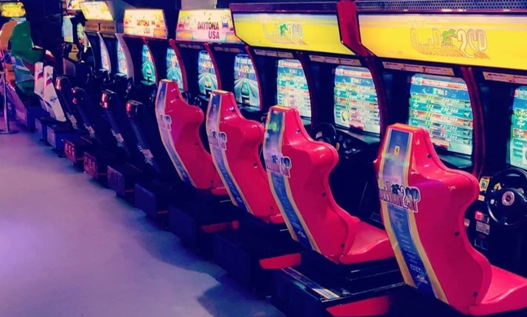
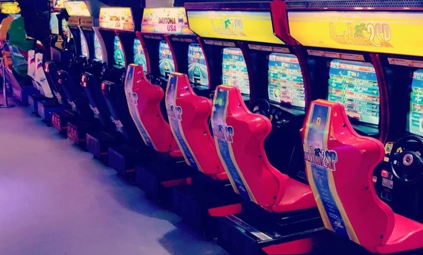

activiteiten
in de nationaal videogame museum zoetermeer kun je een kans krijgen om rond te lopen door een recente gechiedenis van een periode van de eerste generatie games waar je ook een gevoel krijgt dat je door een game hal loopt. je krijgt te weten hoe de games gemaakt zijn en hoe de arcade tijdlijn in elkaar zit er zijn ellarlij bekende games te spelen die jij ook mischien kent en je vader enthousiast je introduceert naar zijn favorieten van 231 verschillende keuzes